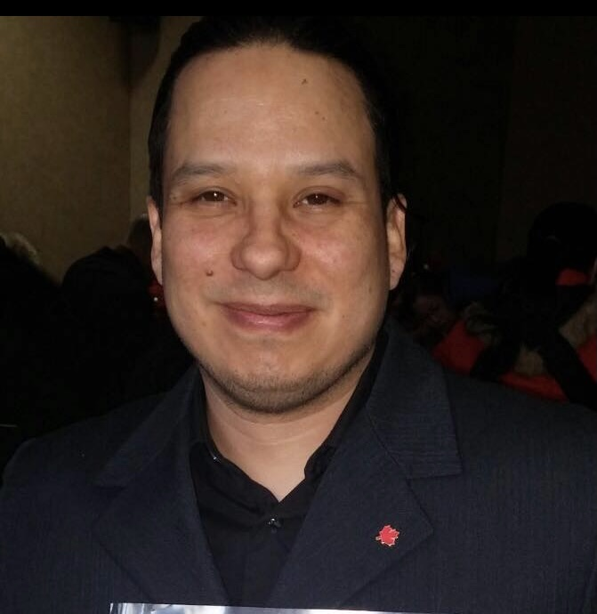

QA Engineer Junior en formación con experiencia práctica en pruebas funcionales, diseño de casos de prueba, validación de aplicaciones web y pruebas API. Estudiante de Ingeniería de Sistemas en la UNAD y participante del programa QA Engineer de TripleTen.
Descargar CVActualmente curso Ingeniería de Sistemas en la Universidad Nacional Abierta y a Distancia (UNAD) y me encuentro en formación como QA Engineer en TripleTen.
He desarrollado experiencia práctica en diseño y ejecución de casos de prueba, validación funcional de aplicaciones web, documentación de defectos y pruebas API utilizando herramientas como Jira, Postman, DevTools y SQL.
Me caracterizo por mi pensamiento analítico, atención al detalle, capacidad de aprendizaje continuo y compromiso con la calidad del software.
Diseño y ejecución de casos de prueba para aplicaciones web y APIs. Documentación de defectos, validación de requisitos funcionales, pruebas manuales y análisis de flujos de usuario utilizando metodologías Agile.
Participación en proyectos de análisis de requerimientos, modelado UML, documentación funcional y diseño de soluciones tecnológicas orientadas a mejorar procesos académicos y empresariales.
Proyecto de QA enfocado en pruebas funcionales, diseño de casos de prueba, análisis de valores límite y documentación de defectos.
Ver Proyecto →Validación de APIs REST mediante pruebas positivas y negativas, análisis de respuestas JSON y verificación de endpoints.
Ver Proyecto →Proyecto académico enfocado en análisis de requerimientos, modelado UML y documentación funcional.
Ver Proyecto →Diseño de una solución tecnológica orientada a mejorar la organización académica de estudiantes universitarios.
Ver Proyecto →Análisis y desarrollo de soluciones tecnológicas aplicadas a problemáticas reales del entorno académico.
Ver Proyecto →Coursera – Tecnológico de Monterrey
Coursera – IBM
Coursera – Tecnológico de Monterrey
TripleTen (En curso)
Español: Nativo
Inglés: B2 (Intermedio Alto)
Francés: A2 (Básico)
📧 camiloacerolopez@gmail.com
📱 +57 3125675384
🔗 LinkedIn: linkedin.com/in/camilo-acero-64a431b
🔗 GitHub: github.com/camiloacerodev
📍 Bogotá, Colombia